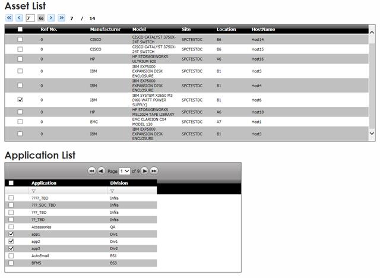
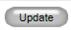
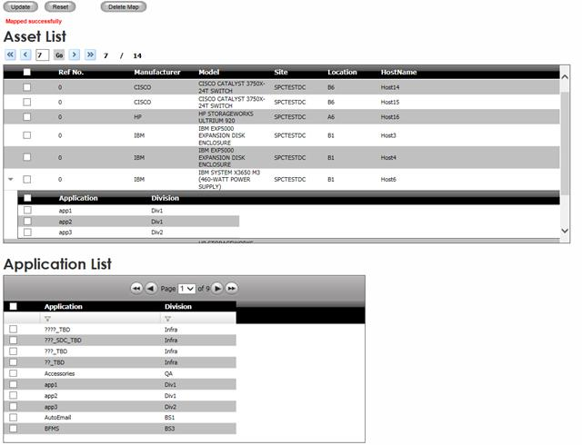

Once application and asset lists are loaded,
1. Check Application(s) which need to be mapped to an asset from application list and check all the asset(s) from asset list. When multiple application and multiple hosts checked than all applications will be mapped to each of the checked asset/host.

Figure 183: Application Map - Mapping
2. Click Update 

Figure 184: Application Map - Mapped successfully
|
Copyright © 2019 Hewlett
Packard Enterprise,v5.2.
|